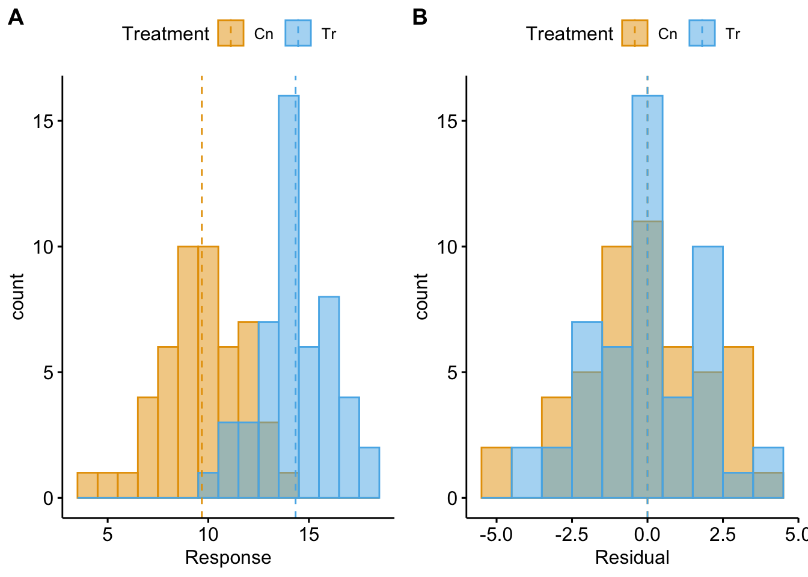
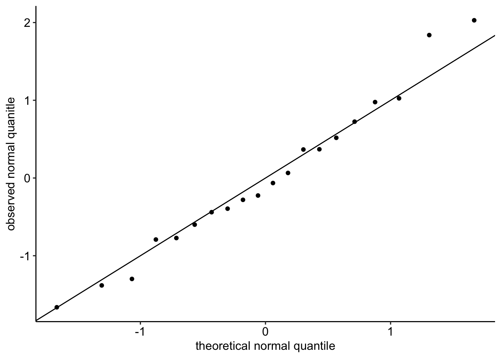
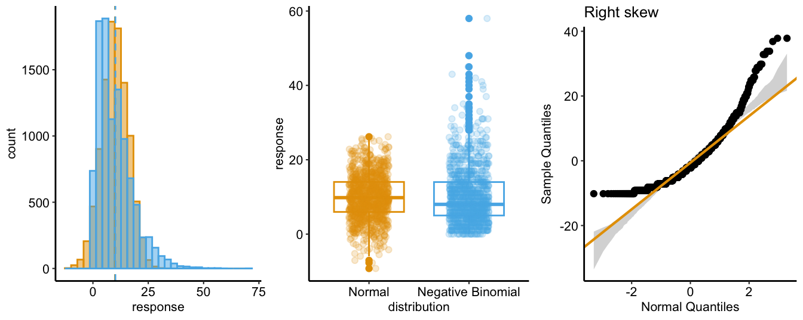
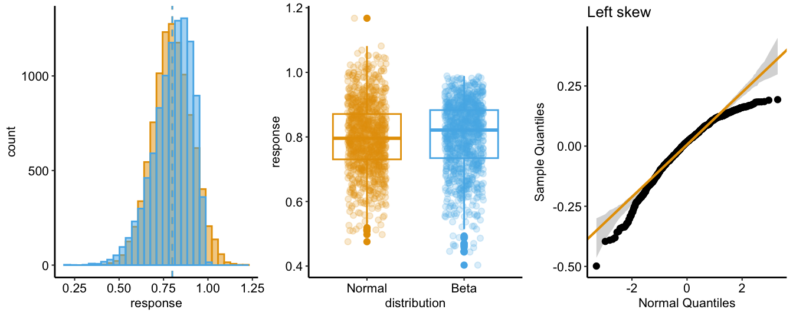
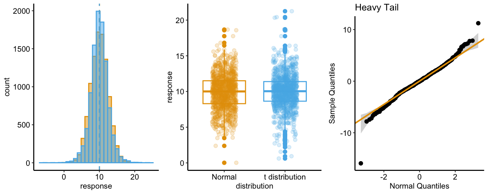
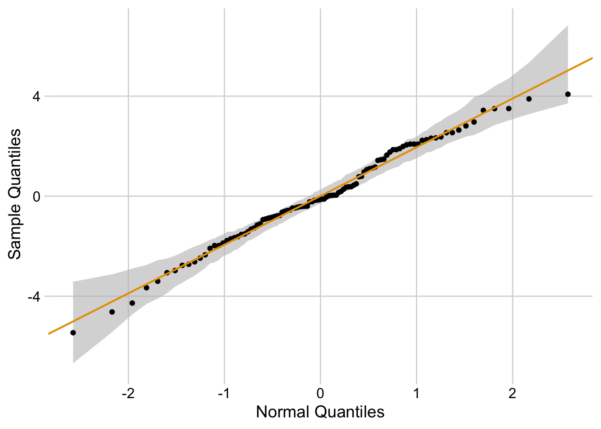
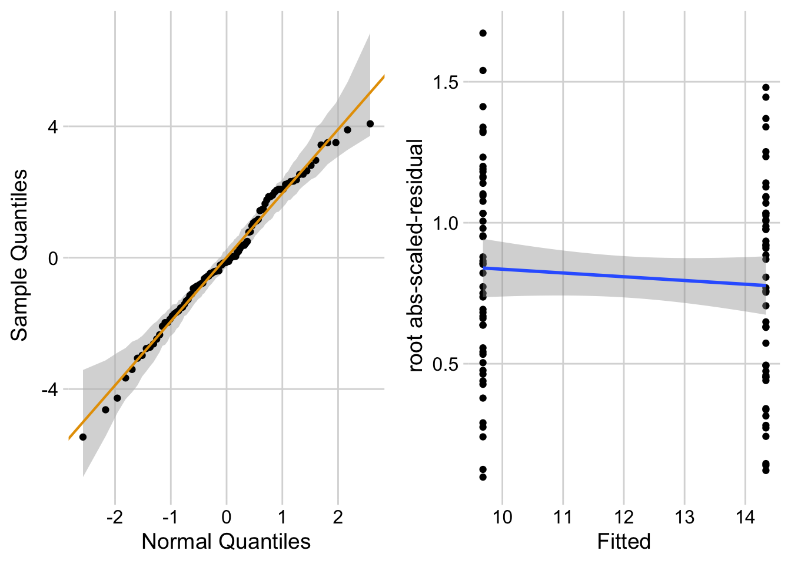
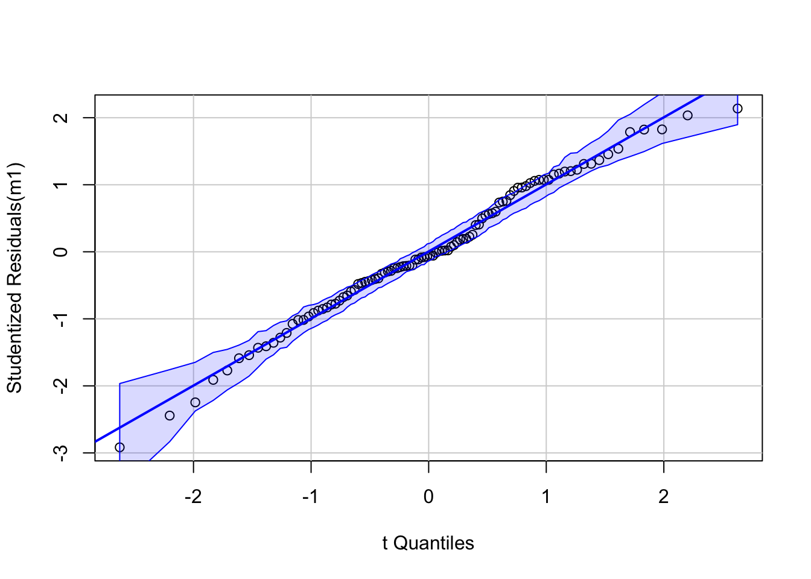
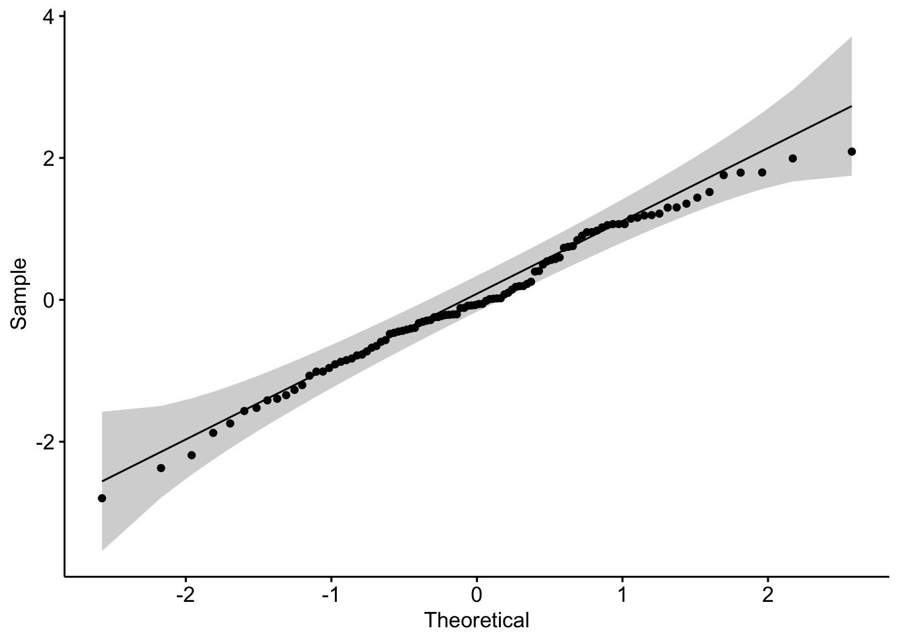

11 Model checking
11.1 All statistical analyses should be followed by model checking
We use a linear model to infer effects or predict future outcomes. Our inference is uncertain. Given the model assumptions, we can quantify this uncertainty with standard errors, and from these standard errors we can compute confidence intervals and p-values. It is good practice to use a series of diagnostic plots, diagnostic statistics, and simulation to check how well the data approximate the fit model and model assumptions. Model checking is used to both check our subjective confidence in the modeled estimates and uncertainty and to provide empirical evidence for subjective decision making in the analysis workflow.
NHST Blues
Researchers are often encouraged by textbooks, colleagues, or the literature to test the assumptions of a t-test or ANOVA with formal hypothesis tests of distributions such as a Shapiro-Wilks test of normality or a Levine test of homogeneity. In this strategy, an alternative to the t-test/ANOVA is used if the distribution test’s p-value is less than some cut-off (such as 0.05). Common alternatives include 1) transformations of the response to either make it more normal or the variances more homogenous, 2) implementation of alternative tests such as a Mann-Whitney-Wilcoxon (MWW) test for non-normal data or a Welch t-test/ANOVA for heterogenous variances. The logic of a test of normality or homogeneity before a t-test/ANOVA is a bit inconsistent with frequentist thinking because the failure to reject a null hypothesis does not mean the null hypothesis is true. That is, we shouldn’t conclude that a sample is “normal” or that the variances are “homogenous” because a distributional test’s p-value > 0.05.
But, maybe we should simply be pragmatic, and use a distributional pre-test as an “objective” model check. The logic of this objective decision rule suffers from several issues. First, for tests of normality, at least, a major issue is: Distribution tests are less likely to reject the null for small \(n\) (because of low power) than large \(n\) (because all real data is, at best, only approximately normal), but inference from confidence intervals and p-values from t-tests/ANOVAs are less reliable with small \(n\) than with large \(n\). As a consequence, researchers will often use normal-models when inference is least reliable and alternative models when they inference is most reliable. Second, a p-value of the ttest/ANOVA test following a distribution test is not strictly valid because a p-value is the long-run frequency of a test-statistic as large or larger than the observed statistic conditional on the null – not conditional on the subset of nulls with \(p > 0.05\) in a distribution test. Third, and most importantly, our analysis should follow the logic of our goals. If our goal is the estimation of effects, we cannot get meaningful estimates from a non-parametric test (with a few exceptions) or a transformed response, as these methods are entirely about computing a “correct” p-value. Good alternatives to classic non-parametric tests and transformations are bootstrap estimates of confidence limits, permutation tests, and generalized linear models.
11.2 Linear model assumptions
To facilitate explanation of assumptions of the linear model and extensions of the linear model, I will use both the error-draw and conditional-draw specifications of a linear model with a single \(X\) variable.
error draw: \[ \begin{align} y &= \beta_0 + \beta_1 x_i + \varepsilon_i\\ \varepsilon_i &\sim N(0, \sigma^2) \end{align} \tag{11.1}\]
conditional draw: \[ \begin{align} y_i &\sim N(\mu_i, \sigma^2)\\ \mathrm{E}(Y|X=x_i) &= \mu_i\\ \mu_i &= \beta_0 + \beta_1 x_i \end{align} \tag{11.2}\]
This model generates random data using the set of rules specified in the model equations. To quantify uncertainty in our estimated parameters, including standard errors, confidence intervals, and p-values, we make the assumption that the data from the experiment is a random sample generated using these rules.
The two rules specified in the model above are
- The systematic component of data generation is \(\beta_0 + \beta_1 X\).
- More generally, all linear models in this text specify systematic components that are linear in the parameters. Perhaps a better name for this is “additive in the parameters”. Additive (or linear) simply means that we can add up the products of a parameter and an \(X\) variable to get the conditional expectation \(\mathrm{E}(Y|X)\).
- For observational inference, the rule \(\mathrm{E}(Y| see\;X=x_i) = \mu_i\) is sufficient. For causal inference with data from an experiment, or with observational data and a well defined causal diagram, we would need to modify this to \(\mathrm{E}(Y|do\; X=x_i) = \mu_i\).
- The stochastic component of data generation is “IID Normal”, where IID is independent and identically distributed and Normal refers to the Normal (or Gaussian) distribution. The IID assumption is common to all linear models. Again, for the purpose of this text, I define a “linear model” very broadly as a model that is linear in the parameters. This includes many extensions of the classical linear model including generalized least squares linear models, linear mixed models, generalized additive models, and generalized linear models. Parametric inference form all linear models requires the specification of a distribution family to sample. Families that we will use in this book include Normal, gamma, binomial, poisson, and negative binomial. This text will also cover distribution free methods of quantifying uncertainty using the bootstrap and permutation, which do not specify a sampling distribution family.
11.2.1 A bit about IID
Independent means that the random draw for one case cannot be predicted from the random draw of any other case. A lack of independence creates correlated error. There are lots or reasons that errors might be correlated. Multiple measures from the same mouse/litter/cage/preparation are expected to be more similar to each other than to measures from different mice/litters/cages/preparations. Multiple measures within any unit that shares variance not shared by other units creates “clusters” of error. Lack of independence or clustered error can be modeled using generalized least squares (GLS) models that directly model the structure of the error and with random effects models. Random effects models go by many names including linear mixed models (common in Ecology), hierarchical models, and multilevel models. Both GLS and random effects models are variations of linear models.
Identical means that all random draws at a given value of \(X\) are from the same distribution. Using the error-draw specification of the model above, this can be restated as, the error-draw (\(\varepsilon_i\)) for every \(i\) is from the same distribution \(N(0, \sigma^2\)). Using the conditional-draw specification, this can be restated as, the random-draw \(y_i\) for every \(i\) with the same expected value \(\mu = \mu_i\) is from the same distribution \(N(\mu_i, \sigma^2\)). Understand the importance of this. Parametric inference using this model assumes that the sampling variance of \(\mu\) at a single value of \(X\) is the same for all values of \(X\). If \(X\) is continuous, this means the spread of the points around the regression line is the same at all values of \(X\) in the data. If \(X\) is categorical, this means the spread of the points around the mean of a group is the same for all groups. A consequence of “identical”, then, for all classical linear models, is the assumption of homogeneity (or homoskedasticity) of variance. If the sampling variance differs among the \(X\), then the variances are heterogenous or heteroskedastic. Experimental treatments can affect the variance of the response in addition to the mean of the response. Heterogenous variance can be modeled using Generalized Least Squares (GLS) linear models. Many natural biological processes generate data in which the error is a function of the mean. For example, measures of biological variables that grow, such as size of body parts, have variances that “grow” with the mean. Or, measures of counts, such as the number of cells damaged by toxin, the number of eggs in a nest, or the number of mRNA transcripts per cell have variances that are a function of the mean. Both growth and count measures can sometimes be reasonably modeled using a linear model but more often, they are better modeled using a Generalized Linear Model (GLM).
11.3 Diagnostic plots use the residuals from the model fit
11.3.1 Residuals
A residual of a statistical model is \(y_i - \hat{y}_i\). Remember that \(\hat{y}_i\) is the predicted value of \(Y\) when \(X\) has the value \(x_i\) (compactly written as \(X=x_i\)). And remember that \(\hat{y}_i\) is the estimate of \(\mu_i\). For linear models (but not generalized linear models), the residuals of the fit model are estimates of the \(\varepsilon\) in Equation 11.1. This is not true for generalized linear models because GLMs are not specified using Equation 11.1.
Alert
A common misconception is that inference from a linear model assumes that the response (the measured \(Y\)) is IID Normal. This is wrong. Either specification of the linear model shows precisely why this conception is wrong. Equation 11.1 explicitly shows that it is the error that has the normal distribution – the distribution of \(Y\) is a mix of the distribution of \(X\) and that of the error. A more general way of thinking about the assumed distribution uses the specification in Equation 11.2, which shows that it is the conditional response that is assumed to be IID normal. Remember, a conditional response is a random draw from the infinite set of responses at a given value of \(X\)
Let’s look at the distribution of residuals versus the distribution of responses for a hypothetical experiment with a single, categorical \(X\) variable (the experimental factor) with two levels (“Cn” for control and “Tr” for treatment). The true parameters are \(\beta_0 = 10\) (the true mean for the control group, or \(\mu_{0}\)), \(\beta_1=4\) (the difference between the true mean for the treatment minus the true mean for the control, or \(\mu_1 - \mu_0\)), and \(\sigma = 2\) (the error standard deviation).
The plot above shows a histogram of the response (A) and residuals (B). In the plot of the response, the mode (the highest bar, or bin with the most cases) includes true mean for each group. And, as expected given \(\beta_1=4\), the modes of the two groups are 4 units apart. It should be easy to see from this plot that the response does not have a normal distribution. Instead, it is distincly bimodal. But the distribution of the response within each level looks like these are drawn from a normal distribution – and it should. In the plot of the residuals, the values of both groups are shifted so that the mean of each group is at zero. The consequence of the shift is that the combined set of residuals does look like it is drawn from a Normal distribution.
The two plots suggest two different approaches for model checking. First, we could examine the responses within each level of the experimental factor. Or, second, we could examine the residuals of the fit model, ignoring that the residuals come from multiple groups. The first is inefficient because it requires as many checks as there are levels in the factor. The second requires a single check.
Alert
Some textbooks that recommend formal hypothesis tests of normality recommend the inefficient, multiple testing on each group separately. This isn’t wrong, it’s just more work than it needs to be and also suffers from “multiple testing”.
11.3.2 A Normal Q-Q plot is used to check for characteristic departures from Normality
A Normal Q-Q plot is a scatterplot of
- sample quantiles on the y axis. The sample quantiles is the vector of \(N\) residuals in rank order, from smallest (most negative) to largest (most positive). Sometimes this vector is standardized by dividing the residual by the standard deviation of the residuals (doing this makes no difference to the interpretation of the Q-Q plot).
- standard normal quantiles on the x axis. This is the vector of standard, Normal quantiles given \(N\) elements in the vector. “Standard Normal” means a normal distribution with mean zero and standard deviation (\(\sigma\)) one. A Normal quantile is the expected deviation given a probability. For example, if the probability is 0.025, the Normal quantile is -1.959964. Check your understanding: 2.5% of the values in a Normal distribution with mean 0 and standard deviation one are more negative than -1.959964. The Normal quantiles of a Normal Q-Q plot are computed for the set of \(N\) values that evenly split the probability span from 0 to 1. For \(N=20\), this would be
p <- data.frame(quantile = qnorm(ppoints(1:20)))
row.names(p) <- ppoints(1:20)
p quantile
0.025 -1.95996398
0.075 -1.43953147
0.125 -1.15034938
0.175 -0.93458929
0.225 -0.75541503
0.275 -0.59776013
0.325 -0.45376219
0.375 -0.31863936
0.425 -0.18911843
0.475 -0.06270678
0.525 0.06270678
0.575 0.18911843
0.625 0.31863936
0.675 0.45376219
0.725 0.59776013
0.775 0.75541503
0.825 0.93458929
0.875 1.15034938
0.925 1.43953147
0.975 1.95996398A Normal Q-Q plot is not a test if the data are Normal. Instead, a Normal Q-Q plot is used to check for characteristic departures from Normality that are signatures of certain well-known distribution families. A researcher can look at a QQ-plot and reason that a departure is small and choose to fit a classic linear model using the Normal distribution. Or, a researcher can look at a QQ-plot and reason that the departure is large enough to fit a generalized linear model with a specific distribution family.
Stats 101
A quantile is the value of a distribution that is greater than \(p\) percent of the values in the distribution. The 2.5% quantile of a uniform distribution from 0 to 1 is 0.025. The 2.5% quantile of a standard normal distribution is -1.96 (remember that 95% of the values in a standard normal distribution are between -1.96 and 1.96). The 50% quantile of a uniform distribution is 0.5 and the 50% quantile of a standard normal distribution is 0.0 (this is the median of the distribtion – 50% of the values are smaller and 50% of the values are larger).
Stats 201
A Q-Q plot more generally is a scatter plot of two vectors of quantiles either of which can come from a sample or a theoretical distribution. In the GLM chapter, the text will introduce Q-Q plots of residual quantiles transformed to have an expected uniform distribution. These are plotted against theoretical uniform quantiles from 0 to 1.
11.3.2.1 Let’s construct a Normal Q-Q plot
A quantile (or percentile) of a vector of numbers is the value of the point at a specified percentage rank. The median is the 50% quantile. The 95% confidence intervals are at the 2.5% and 97.5% quantiles. In a Normal Q-Q plot, we want to plot the quantiles of the residuals against a set of theoretical quantiles.
- To get the observed quantiles, rank the residuals of the fit linear model from most negative to most positive – these are your quantiles! For example, if you have \(n=145\) residuals, then the 73rd point is the 50% quantile.
- A theoretical quantile from the normal distribution can be constructed using the
qnormfunction which returns the normal quantiles for a specified vector of percents. Alternatively, one could randomly sample \(n\) points usingrnorm. These of course will be sampled quantiles so will only approximate the expected theoretical quantiles, but I add this here because we use this method below.
Now simply plot the observed against theoretical quantiles. Often, the standardized quantiles are plotted. A standardized variable has a mean of zero and a standard deviation of one and is computed by 1) centering the vector at zero by subtracting the mean from every value, and 2) dividing each value by the standard deviation of the vector. Recognize that because a standard deviation is a function of deviations from the mean, it doesn’t matter which of these operations is done first. A standardized theoretical quantile is specified by qnorm(p, mean = 0, sd = 1), which is the default.
Code for this would look something like this
# try this with real data. Here I just make it up
fake_data <- data.table(
treatment = rep(c("cn", "tr"), each = 10),
response = rnorm(20,
mean = rep(c(10, 11), each = 10),
sd = 1)
)
m1 <- lm(response ~ treatment, data = fake_data)
fake_data[, y_residual := residuals(m1)]
quantile_observed <- fake_data[, y_residual] %>%
scale() %>%
sort()
N <- length(quantile_observed)
q <- N + 1
x <- seq(1/q, 1 - 1/q, by = 1/q)
quantile_theoretical <- qnorm(x)
# this is not the robust regression line
qplot(x = quantile_theoretical, y = quantile_observed) +
geom_abline(slope = 1, intercept = 0) +
xlab("theoretical normal quantile") +
ylab("observed normal quanitle") +
theme_pubr()Warning: `qplot()` was deprecated in ggplot2 3.4.0.
11.3.2.2 Normal QQ-plot of the fake data generated in Figure 11.1
If the sampled distribution approximates a sample from a normal distribution, the scatter should fall along a line from the bottom, left to the top, right of the plot. The interpretation of a normal Q-Q plot is enhanced with a line of “expected values” of the sample quantiles if the sample residuals are drawn from a normal distribution. The closer the sample quantiles are to the line, the more closely the residuals approximate the expectation from a normal distribution. Because of sampling, the sampled values always deviate from the line, especially at the ends. The shaded gray area in the Q-Q plot in Figure ?fig-modelcheck-qq are the 95% confidence bands of the quantiles. A pattern of observed quantiles with some individual points outside of these boundaries indicates a sample that would be unusual if sampled from a Normal distribution.
Biological datasets frequently have departures on a Normal Q-Q plot that are characteristic of specific distribution families, including lognormal, binomial, poisson, negative binomial, gamma, and beta. It is useful to learn how to read a Normal Q-Q plot to help guide how to model your data.
What about the intepretation of the Q-Q plot in Figure @ref(fig:model-check-qq)? At the small end of the distribution (bottom-left), the sample values are a bit more negative than expected, which means the left tail is a bit extended. At the large end (upper-right), the sample values are, a bit less positive than expected, which means the right tail is a bit shortened. This is a departure in the direction of a left skewed distribution. Should we fit a different model given these deviations? To guide us, we compare the quantiles to the 95% confidence band of the quantiles. Clearly the observed quantiles are within the range of quantiles that we’d expect if sampling from a Normal distribution.
11.3.3 Mapping QQ-plot departures from Normality
Let’s look at simulated samples drawn from non-normal distributions to identify their characteristic deviations. Each set of plots below shows
- (left panel) A histogram of 10,000 random draws from the non-Normal distribution (blue). This histogram is superimposed over that of 10,000 random draws from a Normal distribution (orange) with the same mean and variance as that of the non-normal distribution.
- (middle panel) Box plots and strip chart of a random subset (\(N=1000\)) of data in the left panel.
- (right panel) Normal Q-Q plot of the non_Normal data only.
Skewed-Right Q-Q

The Normal Q-Q plot of a sample from a right-skewed distribution is characterized by sample quantiles at the high (right) end being more positive than the expected Normal quantiles. Often, the quantiles at the low (left) end are also less negative than the expected normal quantiles. The consequence is a concave up pattern.
The histograms in the left panel explain this pattern. The right tail of the skewed-right distribution extends further than the right tail of the Normal. It is easy to see from this that, if we rank the values of each distribution from small to large (these are the quantiles), the upper quantiles of the skewed-right distribution will be larger than the matching quantile of the Normal distribution. For example, the 99,990th quantile for the skewed-right distribution will be much more positive than the 99,990th quantile for the Normal distribution. The opposite occurs at the left tail, which extends further in the negative direction in the Normal than the skewed-right distribution.
The middle panel compares a boxplot and stripchart of samples from the two distributions to show what researchers should look for in their own publication-ready plots as well as the published plots of colleagues. The skewed-right plot exhibits several hallmarks of a skewed-right distribution including 1) a median line (the horizontal line within the box) that is closer to the 25th percentile line (the lower end of the box) than to the 75th percentile line (the upper end of the box), 2) a longer upper than lower whisker (the vertical lines extending out of the box), 3) more outliers above the upper whisker than below the lower whisker, and 4) a lengthened, upward smear of the scatter of points at the high end of the values, relative to the more compact smear at the low end of the values.
Skewed-Left Q-Q

The Normal Q-Q plot of a sample from a left-skewed distribution is characterized by sample quantiles at the low (left) end being more negative than the expected Normal quantiles. Often, the quantiles at the high (right) end are also less positive than the expected normal quantiles. The consequence is a concave down pattern.
The histograms in the left panel explain this pattern. The left tail of the skewed-left distribution extends further than the left tail of the Normal. It is easy to see from this that, if we rank the values of each distribution from small to large (these are the quantiles), the lower quantiles of the skewed-left distribution will be more negative than the matching quantile of the Normal distribution. For example, the 10th quantile for the skewed-left distribution will be much more negative than the 10th quantile for the Normal distribution. The opposite occurs at the right tail, which extends further in the positive direction in the Normal than the skewed-left distribution.
The skewed-left plot in the middle panel highlights several hallmarks of a skewed-left distribution including 1) a median line (the horizontal line within the box) that is closer to the 75th percentile line (the lower end of the box) than to the 25th percentile line (the upper end of the box), 2) a longer lower than upper whisker (the vertical lines extending out of the box), 3) more outliers below the lower whisker than above the upper whisker, and 4) a lengthened, downward smear of the scatter of points at the low end of the values, relative to the more compact smear at the upper end of the values.
Heavy Tail Q-Q

The Normal Q-Q plot of a sample from a heavy-tail distribution is characterized by sample quantiles at the low (left) end being more negative than the expected Normal quantiles and quantiles at the high (right) end that are more positive than the expected normal quantiles.
The histograms in the left panel explain this pattern. At each tail, the heavy-tail distribution has more density – there are more values far from the mean – compared to the Normal distribution. This is the origin of “heavy tail”. It is easy to see from this that, if we rank the values of each distribution from small to large (these are the quantiles), the lower quantiles of the heavy tail distribution will be more negative than the matching quantile of the Normal distribution. For example, the 10th quantile for the heavy-tail distribution will be much more negative than the 10th quantile for the Normal distribution. Likewise, the upper quantiles of the heavy tail distribution will be more positive than the matching quantile of the Normal distribution. For example, the 99,990th quantile for the heavy-tail distribution will be much more positive than the 99,990th quantile for the Normal distribution.
The heavy-tail plot in the middle panel shows more boxplot outliers than in the Normal plot. This would be hard to recognize in a plot of real data.
Mapping characteristic departures on a Q-Q plot to specific distributions
- Continuous response variables of length, area, weight, or duration will often look like samples from a continous probability distribution that is right-skewed, such as the lognormal or gamma distributions.
- Count response variables will frequently look like samples from a discrete probability distribution that is right-skewed, such as the poisson, quasi-poisson, or negative binomial distributions.
- Proportion (fraction of a whole) response variables will frequently look like samples from a continuous probability distribution bounded by 0 and 1, such as the beta distribution. Samples from a beta distribution can be left skewed, if the mean is near 1, right-skewed, if the mean is near zero, or symmetrical, if the mean is near 0.5.
11.3.3.1 Pump your intuition – confidence bands of a Q-Q plot
In introducing the confidence bands of the Q-Q plot above, I stated “A pattern of observed quantiles with some individual points outside of these boundaries indicates a sample that would be unusual if sampled from a Normal distribution.” Let’s use a parametric bootstrap to explore this.
- Sample \(n\) values from a Normal distribution
- Compute the sample quantiles by re-ordering the residuals of the sampled values from the sampled mean, from most negative to most positive.
- Plot the quantiles against Normal quantiles for \(n\) points.
- Repeat steps 1-3 \(n\_iter\) times, superimposing the new sample quantiles over all previous sample quantiles. This creates a band of all sample quantiles over \(n\_iter\) iterations of sampling \(n\) values from a Normal distribution.
- At each value of the Normal quantile, compute the 95 percentile range of the sampled quantiles. Draw a ribbon inside these boundaries.
n_iter <- 1000
n <- 20
normal_qq <- ppoints(n) %>%
qnorm()
sample_qq <- numeric(n_iter*n)
inc <- 1:n
for(iter in 1:n_iter){
y <- rnorm(n)
y_res <- y - mean(y)
sample_qq[inc] <- y_res[order(y_res)]
inc <- inc + n
}
qq_data <- data.table(normal_qq = normal_qq,
sample_qq = sample_qq)
qq_ci <- qq_data[, .(median = median(sample_qq),
lower = quantile(sample_qq, 0.025),
upper = quantile(sample_qq, 0.975)),
by = normal_qq]
ggplot(data = qq_data,
aes(x = normal_qq,
y = sample_qq)) +
geom_point(alpha = 0.2) +
geom_ribbon(data = qq_ci,
aes(ymin = lower,
ymax = upper,
y = median,
fill = "band"),
fill = pal_okabe_ito[1],
alpha = 0.3) +
xlab("Normal Quantile") +
ylab("Sample Quantile") +
theme_grid() +
NULL11.3.4 Model checking homoskedasticity
11.4 Working in R
Let’s use a fake dataset to show qq plots generated by different packages.
set.seed(20)
n <- 50
mu <- 10
sigma <- 2
beta <- sigma*2
fake_data <- data.table(
treatment = rep(c("Cn", "Tr"), each=n),
response = c(rnorm(n, mean = mu, sd = sigma),
rnorm(n, mean = mu + beta, sd = sigma))
)
m1 <- lm(response ~ treatment, data = fake_data)11.4.1 ggcheck_the_qq from the ggplot_the_model source code
ggcheck_the_qq from the ggplot_the_model source code replicates the default behavior of the car::qqPlot (see below), which is a robust line through the points with a 95% confidence interval.
set.seed(1)
ggcheck_the_qq(m1)
The practice in this text is to print both the qqplot and the spread-level plot using ggcheck_the_model
set.seed(1)
ggcheck_the_model(m1)`geom_smooth()` using formula = 'y ~ x'
11.4.2 qqPlot from the car package
car::qqPlot has several important arguments to control the type of Q-Q plot. The function uses base graphics instead of ggplot2. Typically, these plots would not be published other than possibly a supplement. Q-Q Plots and Worm Plots from Scratch is a good source of some of the arguments in qqPlot. Three important arguments are:
- simulate. If passing a
lmobject, then the default confidence band is generated by a parametric bootstrap (simulate = TRUE). This band will differ somewhat each time you replot unless you set the seed withset.seed. Setting the argumentsimulate = FALSEreturns the parametric band. - line. If passing a
lmobject, then the default line is a fit from a robust regression (line = "robust"). Setting the argumentline = "quartiles"fits a line throught the 25th and 75th percentile (or “quartiles”) quantiles. - id. The default identifies the index of the two points with the most extreme quartiles. Set to FALSE to hide.
The robust line is more sensitive to departures from Normality than the quartiles line.
# defaults: robust line with bootstrap CI
set.seed(1)
qqPlot(m1, id = FALSE)
# classic: standard line with parametric CI
qqPlot(m1,
line = "quartiles",
simulate = FALSE,
id = FALSE)11.4.3 ggqqplot from the ggpubr package
ggpubr::ggqqplot generates a pretty, ggplot2 based Normal Q-Q plot, using the standard method for computing the line and confidence band.
m1_residuals <- data.table(m1_residuals = residuals(m1))
m1_residuals[, studentized := m1_residuals/sd(m1_residuals)]
ggqqplot(data = m1_residuals,
x = "studentized")